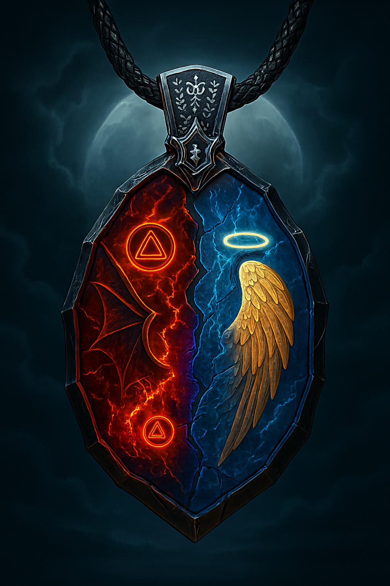

01 / לפני הכול
ברית שהופרה
אזראגור, מלך השדים, ואביבאל, מנהיג המלאכים, שמרו על שלום בין העולמות. לומיאל ואזאוראק כרתו ברית, כלאו את שניהם בתליון קסום ותפסו את השלטון.

ORIGINAL FANTASY SERIES
כשמלאכים ושדים מגיעים אל העולם שלנו, שני ילדים מחזיקים במפתח לשחרור המנהיגים האבודים.
בעולם שבו המלאכים חיים בעולם השמש והשדים בעולם הירח, הסכם שלום עתיק נשבר לאחר הפיכה. תכשיט אחד, שנחצה לשניים, כולא בתוכו את מנהיגי שני העולמות — ומעביר את הסיפור אל עולם בני האדם.
01 / לפני הכול
אזראגור, מלך השדים, ואביבאל, מנהיג המלאכים, שמרו על שלום בין העולמות. לומיאל ואזאוראק כרתו ברית, כלאו את שניהם בתליון קסום ותפסו את השלטון.
02 / בעולם שלנו
שדים ומלאכים פועלים בעולם בני האדם אך נראים רק כצל או כאור. השדים משתלטים על אנשים בעלי כוונות רעות ומעצימים את מעשיהם.
03 / הכוח החדש
ילדה ובנו של אוצר עתיקות מוצאים את שני חלקי התליון. כשמחברים אותם, הם מתאחדים לדמות אחת — חצי מלאך וחצי שד — ויוצאים להגן על העולם ולשחרר את המנהיגים.
לחצו על כל איור להגדלה.